Clark Freeport Zone
A major business and tourism district known for modern attractions, shopping centers, hotels, casinos, and recreational destinations built from the former Clark Air Base.

Nayon Pilipino Clark
A cultural destination showcasing Filipino heritage, traditions, architecture, and local arts through exhibits and themed attractions.
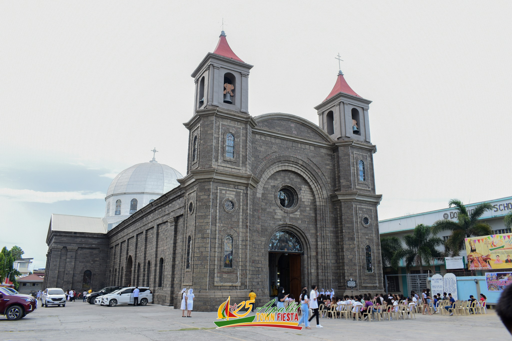
Saint Peter the Apostle Parish Church
A historic Catholic church dedicated to St. Peter the Apostle, known for its religious importance and annual Apung Iru celebrations.
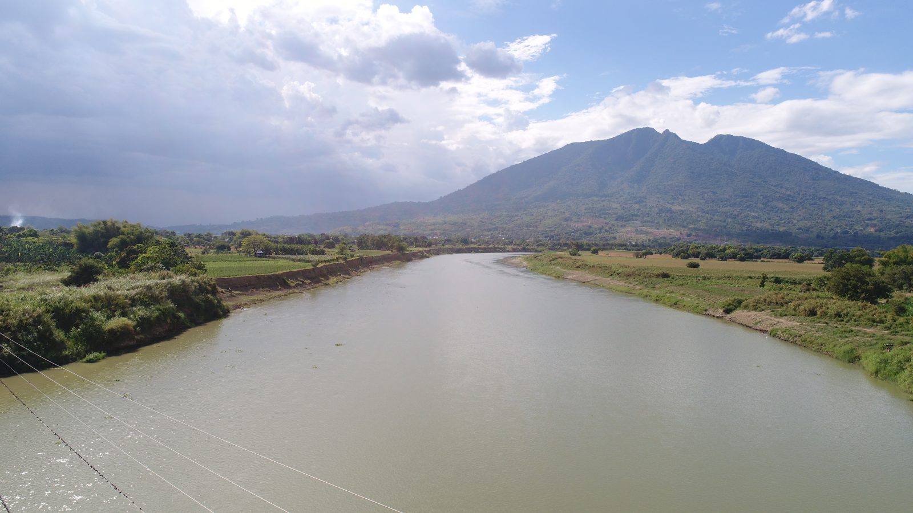
Pampanga River
One of Central Luzon’s major rivers, supporting fishing communities, river transport, and religious fluvial processions in Apalit.

Mount Arayat
An iconic dormant volcano famous for hiking trails, forests, wildlife, and strong cultural significance in Pampanga folklore.
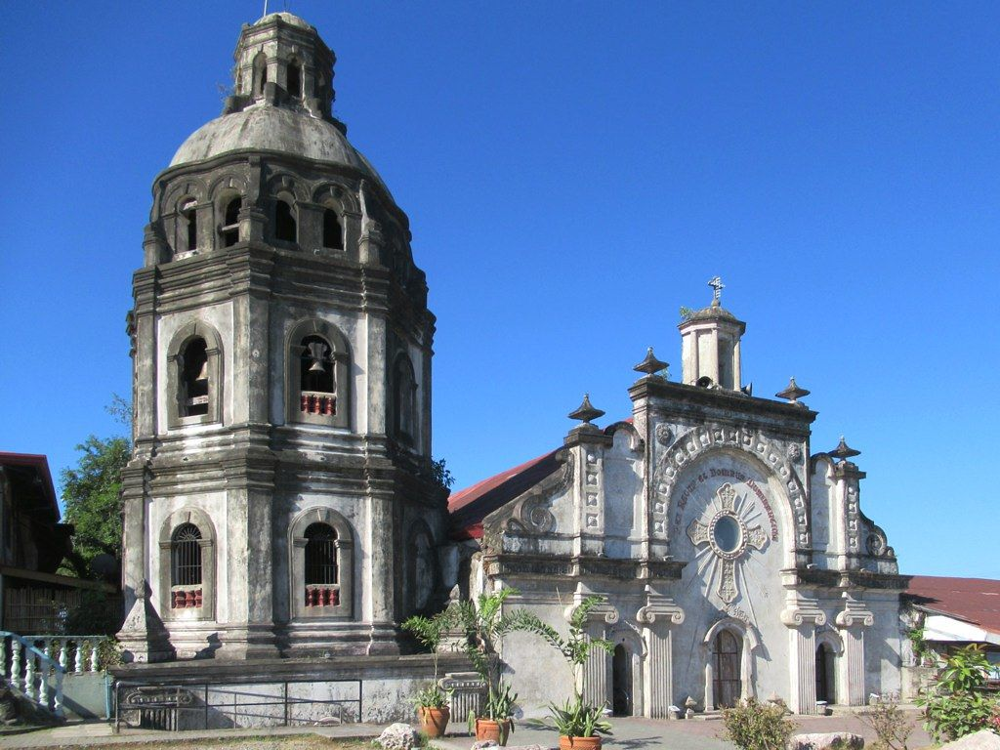
San Guillermo Parish Church
A historic church partially buried by lahar during Mount Pinatubo’s eruption, symbolizing Bacolor’s resilience and faith.
Our Lady of Lourdes Church
A Catholic church and pilgrimage site visited for prayer, devotion, and religious gatherings by local residents.

Candaba Swamp
A protected wetland sanctuary famous for migratory birds, rich biodiversity, and scenic natural landscapes during rainy seasons.

San Andres Apostol Parish Church
A historic Catholic church dedicated to St. Andrew the Apostle and center of Candaba’s religious traditions.
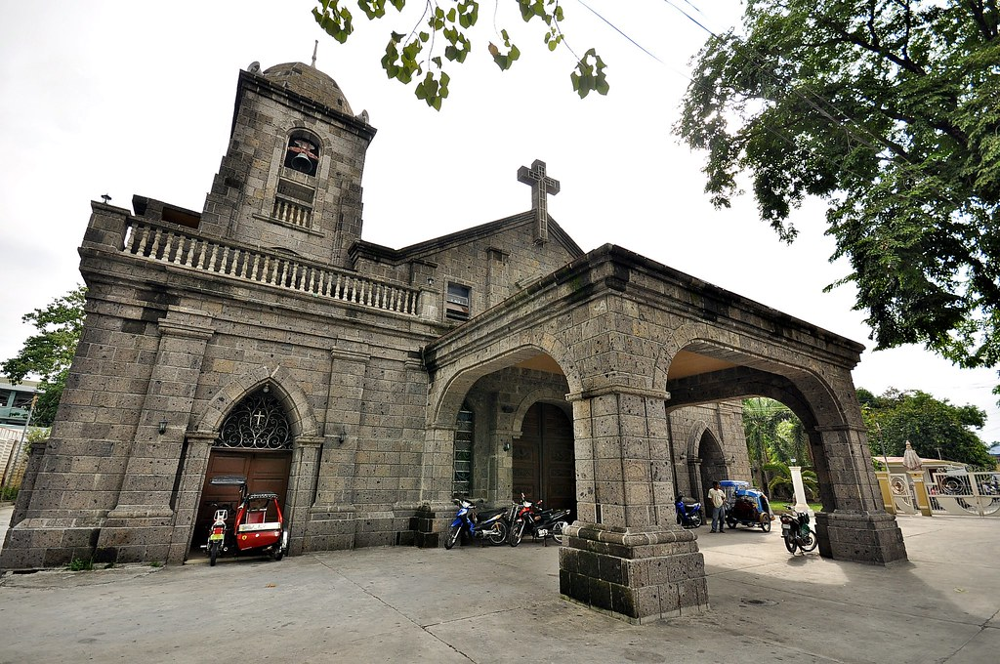
St. Joseph the Worker Parish Church
A Catholic church dedicated to St. Joseph, serving as an important religious landmark in Floridablanca.

Palakol River
A peaceful river destination known for its natural scenery, fishing activities, and importance to nearby farming and local communities.

Santiago Apostol Parish Church
A centuries-old church recognized for its Spanish-era architecture and strong religious traditions in Guagua.

Lubao Bamboo Hub and Eco Park
An eco-tourism destination promoting bamboo products, sustainability, and outdoor recreational activities for visitors.

Lubao Town Plaza
A public gathering space surrounded by historical structures, commonly used for events and community celebrations.

Aqua Planet
A popular water park offering thrilling slides, wave pools, and fun attractions for families and tourists.

Dinosaurs Island
A family-friendly attraction featuring life-sized dinosaur displays, interactive activities, and educational exhibits.
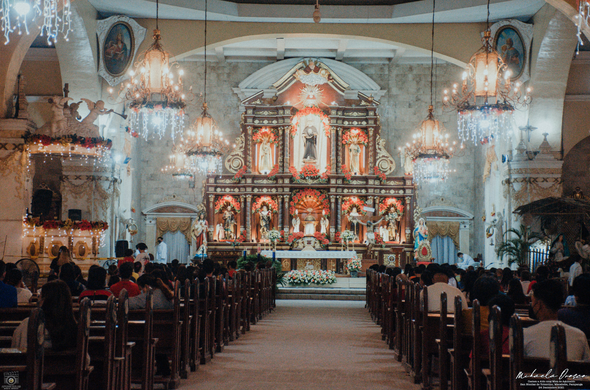
St. Nicholas of Tolentine Parish Church
A historic church dedicated to St. Nicholas of Tolentine, known for its religious importance and classic architecture.
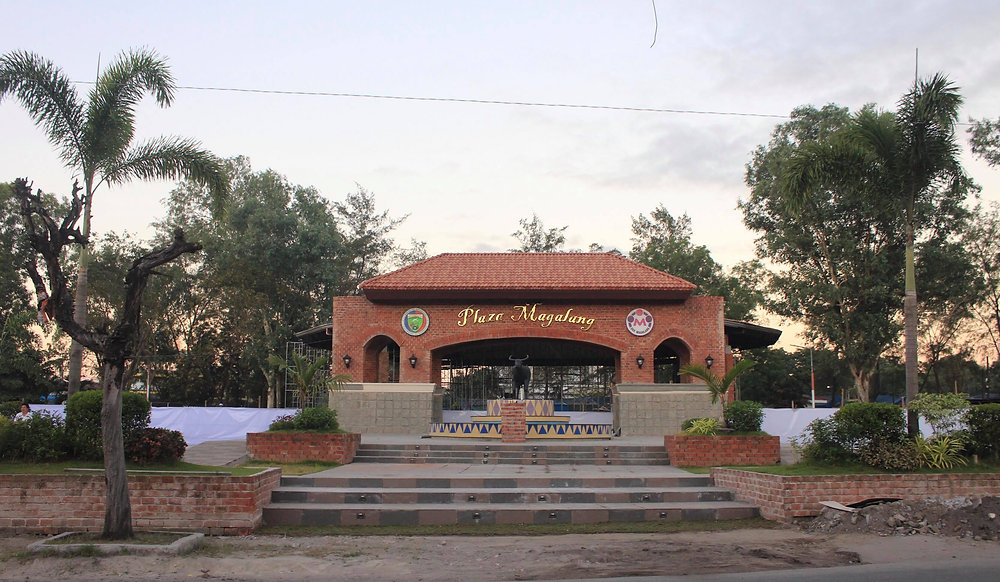
Magalang Plaza
A central public space in Magalang used for community gatherings, local events, fiestas, and recreational activities for residents and visitors.
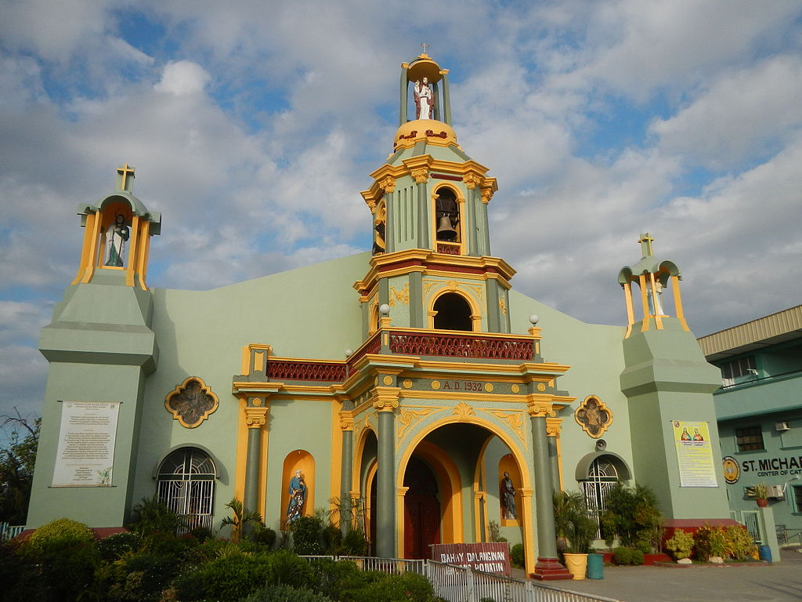
San Miguel Archangel Parish Church
A Catholic church dedicated to St. Michael the Archangel and center of Masantol’s religious celebrations.
Global Construct City
A developing commercial and residential area featuring modern establishments, businesses, and urban infrastructure in Mexico, Pampanga.
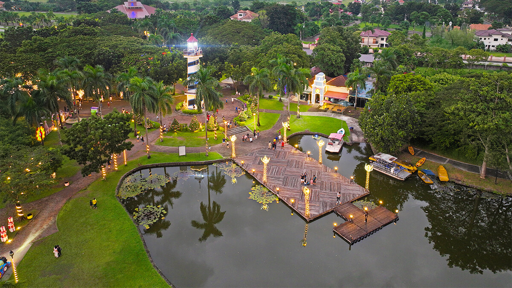
Lakeshore Pampanga
A recreational lakeside destination known for outdoor activities, events, and scenic views near the municipality.

Santa Monica Parish Church
A historic church recognized for its unique architecture and role in Minalin’s religious traditions.

Sunset Park
A relaxing public destination where visitors enjoy open spaces, sunsets, and recreational activities with families and friends.

Sandbox at Alviera
An adventure park offering zip lines, ATV rides, obstacle courses, and outdoor recreational activities for tourists.

Miyamit Falls
A scenic waterfall destination surrounded by forests and natural landscapes, popular among hikers and nature enthusiasts.
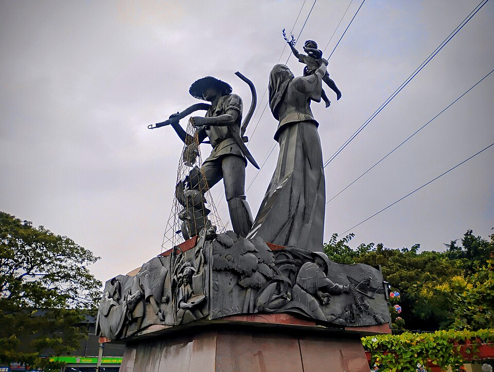
Luis Taruc Monument
A historical monument honoring Luis Taruc, a prominent Kapampangan revolutionary and political figure from Pampanga.
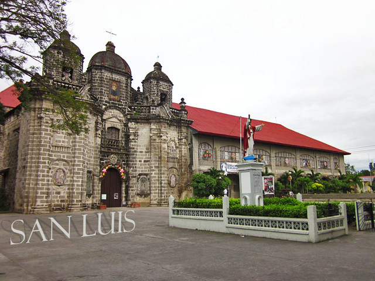
San Luis Parish Church
A Catholic church serving as the center of religious activities and patron saint celebrations in San Luis.
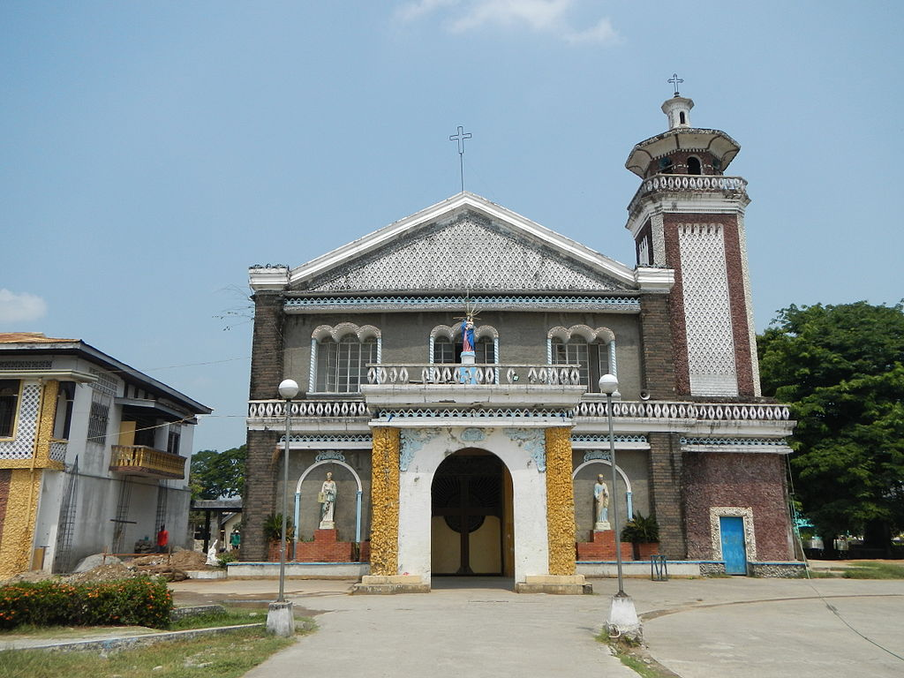
San Simon Parish Church
A historic Catholic church known for religious gatherings, patron saint festivities, and community devotion in San Simon.
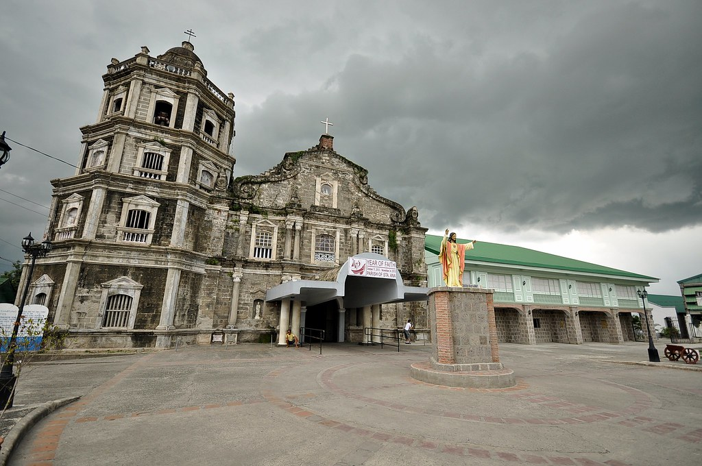
Santa Ana Parish Church
A religious landmark dedicated to Saint Anne, serving as the center of worship and local traditions in the municipality.
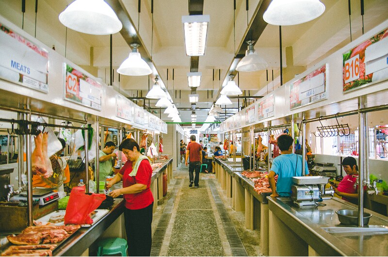
Santa Ana Public Market
A busy local marketplace where residents buy fresh produce, seafood, and locally made products daily.

Santa Rita Parish Church
A historic church known for religious gatherings, community traditions, and devotion to Saint Rita.

Eco Park
A relaxing nature destination featuring green landscapes, open spaces, and outdoor recreational activities.

Santo Tomas Apostle Parish Church
A historic church honoring St. Thomas the Apostle, known for religious celebrations and community gatherings.

SkyRanch Pampanga
A popular amusement park featuring rides, attractions, and entertainment activities for families and tourists.

Paskuhan Village
A Christmas-themed destination famous for giant lantern displays, holiday decorations, and seasonal events in Pampanga.

Santa Lucia Parish Church
A historic church dedicated to Saint Lucy, serving as an important religious and cultural landmark in Sasmuan.